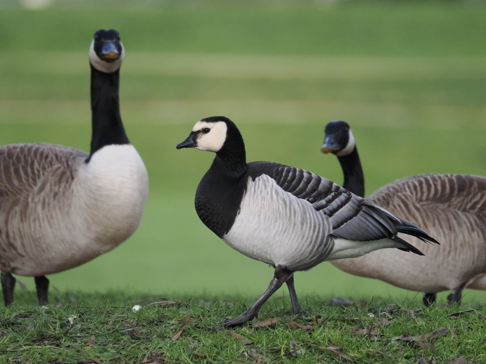

Barnacle Goose
Branta leucopsis

A small goose with a black neck and breast, but a white face. The wings and back are grey with black barring. The name Barnacle Goose comes from the myth that they hatched from goose barnacles, but that is quite obviously not true. They breed in the arctic, sometimes on tall cliffs where the chick must jump off to reach their feeding grounds. In the UK, most are migratory, over-wintering birds, but certain feral individuals do exist, and might associate with other goose species.